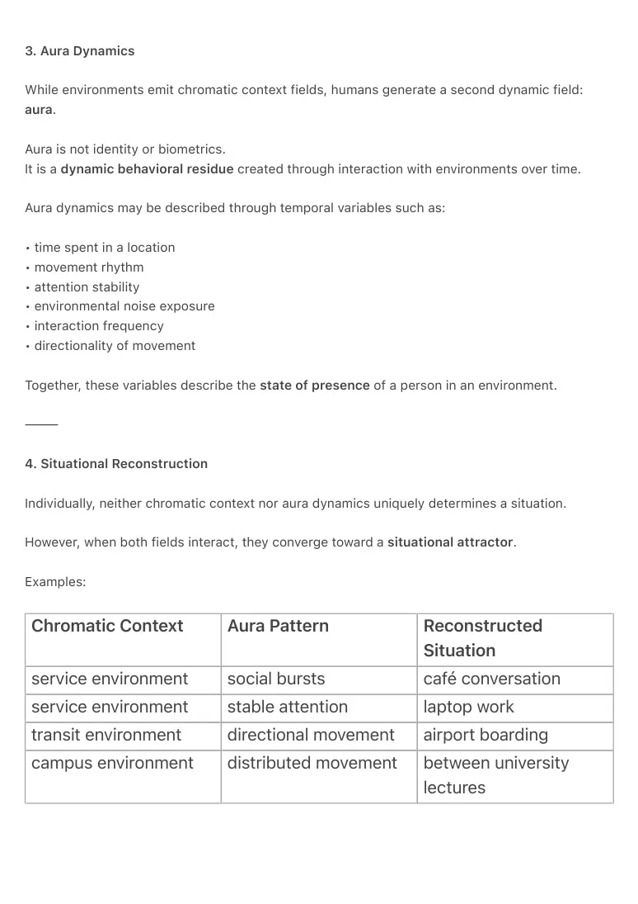

PDF page 1
Chromatic Context × Aura Dynamics:
A Situational Reconstruction Model for Ambient Systems
Author: Raynor Eissens
Ambient Era Canon · Concept Note · 2026
Version: 1.0
⸻
Abstract
This note proposes a conceptual model in which human situations can be reconstructed through
the interaction between two field-based systems: chromatic context broadcast and aura
dynamics.
In the Ambient Era framework, environments emit a continuous chromatic context field,
represented as a low-dimensional color manifold encoding structural properties of places such
as infrastructure, services, movement, and social presence. At the same time, users generate a
dynamic aura field reflecting temporal behavioral patterns including movement, attention,
interaction, directionality, and environmental coupling.
The central hypothesis is that a situation emerges through the interaction of these two fields:
Situation = Chromatic Context × Aura Dynamics
Chromatic context encodes where a user is, while aura dynamics encode what the user is doing.
When both are combined, the system converges toward a situational attractor, enabling context
recognition without symbolic labels, object detection, or explicit geolocation queries.
This conceptual framework suggests an alternative to application-centric smartphone interfaces.
Rather than navigating isolated application containers, users operate within a continuous
ambient field where meaning emerges from the resonance between environmental chromatic
signals and human behavioral dynamics.
⸻
PDF page 2
1. Problem
Modern smartphone systems organize attention through application containers. Each application
represents an isolated information space that does not share environmental context with other
applications.
As a result, human attention becomes detached from spatial and situational awareness.
Navigation, search, and interaction therefore rely on symbolic queries, explicit user input, or
centralized database systems such as maps, identifiers, or location services.
This architecture fragments context and prevents systems from understanding situations
directly.
⸻
2. Chromatic Context Broadcast
Many real-world environments already rely on color as a structural signal. Transportation
networks, hospitals, campuses, retail systems, and public infrastructure use consistent color
fields for navigation and semantic differentiation.
In the Ambient Era Canon, these patterns are formalized as a chromatic context broadcast.
A location is represented by a chromatic vector within a seven-dimensional manifold describing
structural environmental properties such as:
• action / intensity
• activity
• movement / transit
• environmental openness
• services / knowledge fields
• infrastructure systems
• human relational presence
Rather than identifying objects, the chromatic vector encodes the structural character of the
environment.
⸻
PDF page 3
3. Aura Dynamics
While environments emit chromatic context fields, humans generate a second dynamic field:
aura.
Aura is not identity or biometrics.
It is a dynamic behavioral residue created through interaction with environments over time.
Aura dynamics may be described through temporal variables such as:
• time spent in a location
• movement rhythm
• attention stability
• environmental noise exposure
• interaction frequency
• directionality of movement
Together, these variables describe the state of presence of a person in an environment.
⸻
4. Situational Reconstruction
Individually, neither chromatic context nor aura dynamics uniquely determines a situation.
However, when both fields interact, they converge toward a situational attractor.
Examples:
Chromatic Context Aura Pattern Reconstructed Situation
service environment social bursts café conversation
service environment stable attention laptop work
transit environment directional movement airport boarding
campus environment distributed movement between university lectures

PDF page 4
This produces a reconstruction model in which meaning arises from field resonance, not
symbolic interpretation.
Cross-Field Reconstruction Law (New in v1.1)
A situation is the lowest-energy intersection field between environmental chromatic
attractors and human aura dynamics.
S = C × A represents the minimal convergence state of both fields.
This expresses situational meaning as the thermodynamically stable attractor of two interacting
fields.
⸻
5. Implications
If implemented, such a system would allow context-aware technologies to infer situations
through:
• environmental field patterns
• human behavioral dynamics
• chromatic attractors
• aura residues
rather than through explicit queries, application switching, or centralized database
lookups.
Navigation, discovery, and interaction would occur through ambient field
coherence, not app-based models.
This note does not claim such systems exist at scale today.
It demonstrates that the combination of chromatic environmental encoding and
behavioral aura dynamics forms a coherent, non-symbolic architecture capable of
reconstructing human situations.
⸻
PDF page 5
Keywords
Ambient systems
Chromatic context
Aura dynamics
Situational attractors
Context reconstruction
Field-based interfaces
Ambient Era Canon
⸻
Citation
Eissens, R. (2026). Chromatic Context × Aura Dynamics: A Situational Reconstruction Model for
Ambient Systems (v1.0). Ambient Era Canon Concept Note. Zenodo.